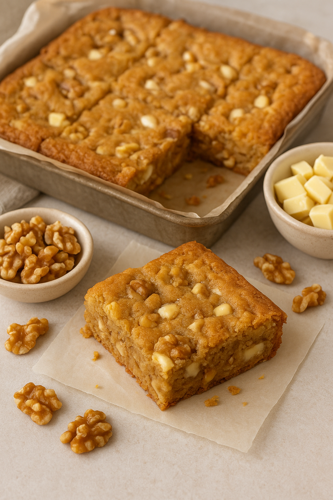

Home
The Blondies

Description
Golden, chewy, and irresistibly rich, these brown butter blondies are loaded with creamy white
chocolate chunks and crunchy toasted walnuts in every bite. The nutty depth from the browned
butter perfectly balances the sweetness, while the gooey center and crisp edges create the
ultimate texture contrast. They're buttery, decadent, and the kind of treat you'll have a
hard time stopping at just one square.
Ingredients
- 1 cup (2 sticks) unsalted butter
- 1 ½ cups light brown sugar, packed
- 2 large eggs
- 2 tsp vanilla extract
- 1 ¾ cups all-purpose flour
- 1 tsp baking powder
- ½ tsp salt
- 1 cup white chocolate chips (or chopped white chocolate)
- ¾ cup chopped walnuts (toasted for extra flavor)
Steps
-
Brown the butter:
- In a saucepan over medium heat, melt butter.
- Continue cooking, swirling occasionally, until it foams and develops a nutty aroma with golden brown bits at the bottom (about 5-7 minutes).
- Remove from heat and let cool slightly.
-
Mix the wet ingredients:
- In a bowl, whisk the brown butter with brown sugar until smooth.
- Add eggs one at a time, whisking well. Stir in vanilla.
-
Mix the dry ingredients:
- In another bowl, whisk flour, baking powder, and salt.
- Fold dry ingredients into the wet mixture until just combined (don't overmix).
-
Add the mix-ins:
- Fold in white chocolate chips and walnuts.
-
Bake:
- Preheat oven to 350°F (175°C).
- Line an 8x8-inch pan with parchment paper.
- Spread batter evenly and smooth the top.
- Bake for 25-30 minutes, until golden and a toothpick comes out with a few moist crumbs.
-
Cool & serve:
- Let cool completely in the pan before slicing into squares.